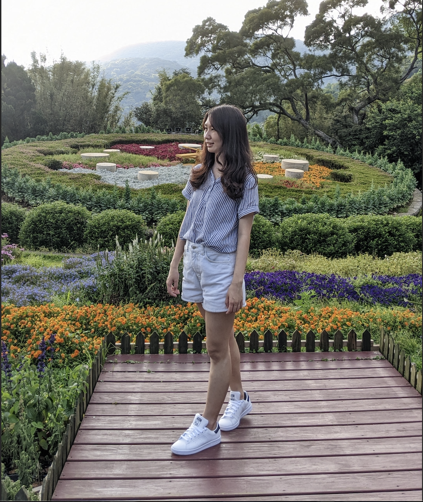

lysee13.ee06@nycu.edu.tw
I am a master student at National Tsing Hua University advised by Prof. Sun Min. I am interested in deep learning and recommendation System.
I graduated with B.S. from the Electrical and Computer Engineering Department at National Yang Ming Chiao Tung University, supervised by Prof. Kai-Ten Feng.
[GitHub] [Linkedin] [Email]| Sep 2021 - Present | VSLab @ NTHU, M.S. student
Advisor: Prof. Min Sun |
|
| Feb 2020 - Jun 2021 | MINT Lab @ NYCU, B.S. student
Advisor: Prof. Kai-Ten Feng |
|
| Feb 2021 - Jun 2021 | MINT Lab @ NYCU, B.S. student
Advisor: Prof. Kai-Ten Feng Project Name: Pre-processing for AngLoc Indoor Location Figerprinting using Wi-Fi CSI |
| July 2020 - Jan 2021 | MINT Lab @ NYCU, B.S. student
Advisor: Prof. Kai-Ten Feng Project Name: Learning-Based Indoor Localization by Using Wi-Fi CSI |
| Feb 2020 - Jun 2020 | MINT Lab @ NYCU, B.S. student
Advisor: Prof. Kai-Ten Feng Project Name: Wi-Fi Based Indoor Localization |